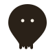
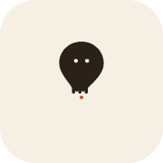
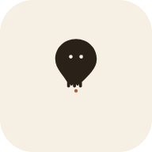

KIT 01 · RECOMMENDED
Ghost-pin
Place + presence in one mark. Strongest silhouette of the three.
FAVICON

SVG
APP ICON


HEADER
 geowhisper
geowhisper
BROWSER TAB
GeoWhisper · a place worth a whisper